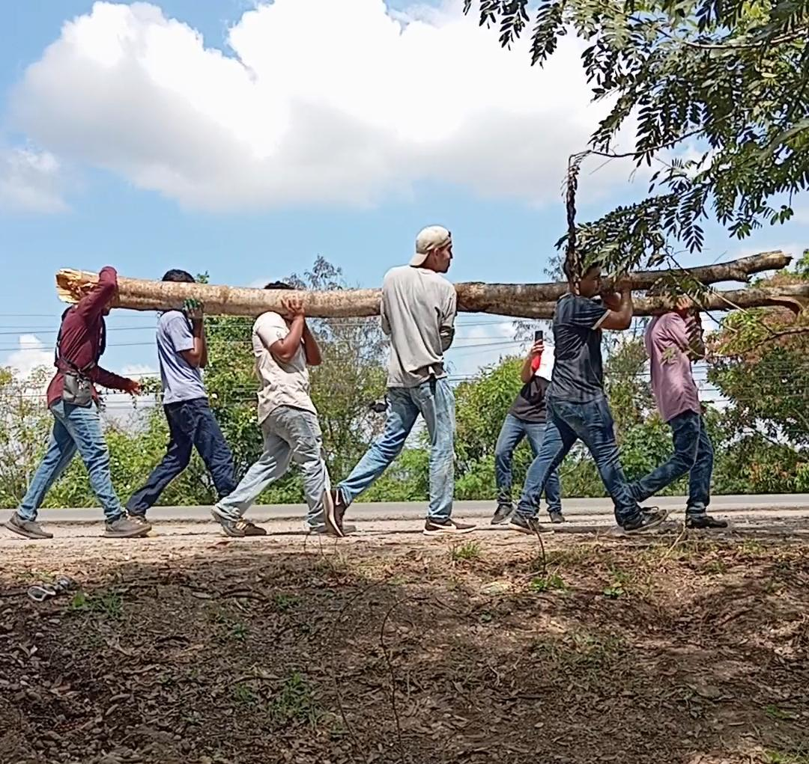
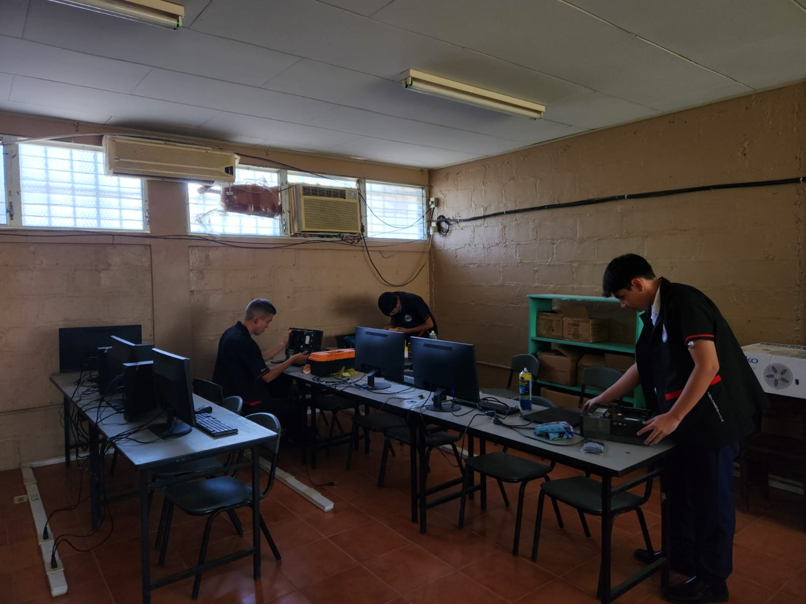
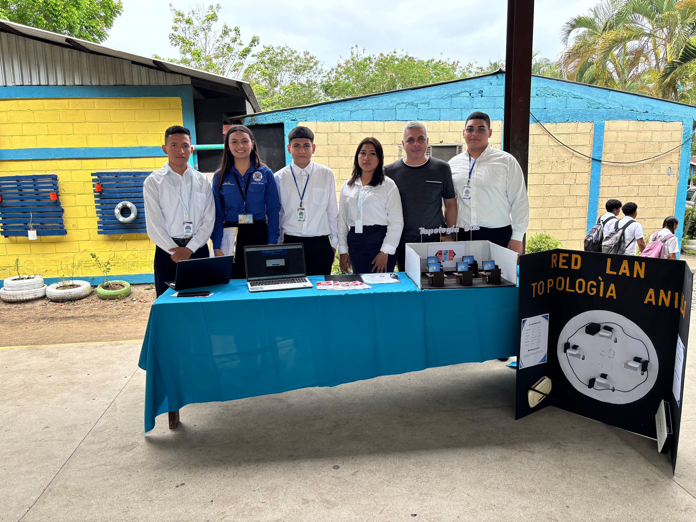

TES
En el Trabajo Educativo Social nos encargamos de que nuestro instituto esté en las mejores condiciones, haciendo tareas como recoger la basura, limpiar las áreas comunes y cortar el césped para mejorar el ambiente. Además, participamos en charlas y lives sobre la prevención del cáncer, con el fin de aprender cómo cuidarnos y compartir esa información importante con nuestros compañeros

Mantenimientos
Nos encargamos de que los equipos de nuestro instituto funcionen bien, dando soporte a estudiantes y docentes. También visitamos otras escuelas para dar mantenimiento e instalaciones de software a sus computadoras, asegurando que los niños tengan computadoras en buen estado
.png)
Programa
Lideramos el programa "Desde el Colegio" vía Facebook Live, orientando a los compañeros de 11vo en la gestión de medios, cámaras y producción de contenido en vivo.

Maquetas
Diseño de maquetas sobre topologías de red (LAN, WAN, PAN) y creación de material técnico informativo para docentes sobre la conectividad global.